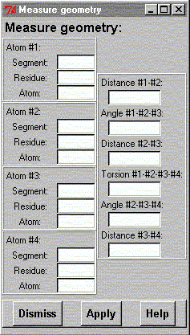

**************************************************************************
Measure Geometry Widget
Leif Laaksonen CSC 1999
**************************************************************************
Measure distance(s), angle(s) and/or torsion angle(s) between selected atoms. To define a distance you have to define two atoms, for an angle three atoms and for a torsion angle four atoms. Two atoms can only define a distance, three atoms will also define two distances and four atoms defines three distances, two angles and one torsion angle. Click on the "Apply" button and the widget will show you the values defined by the atoms.

Line command: see calculate command
**************************************************************************
LUL/1999
**************************************************************************